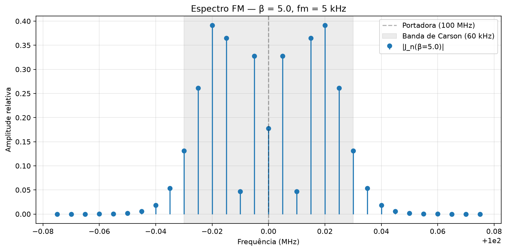
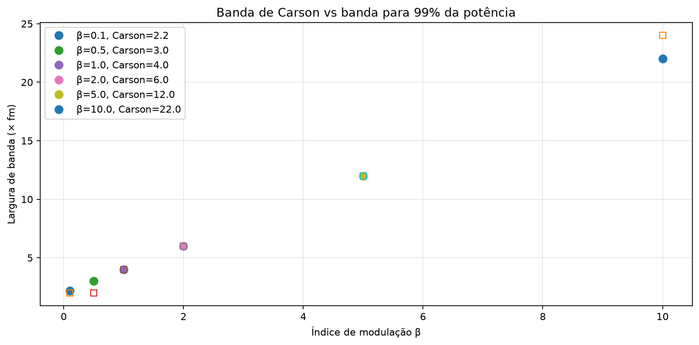
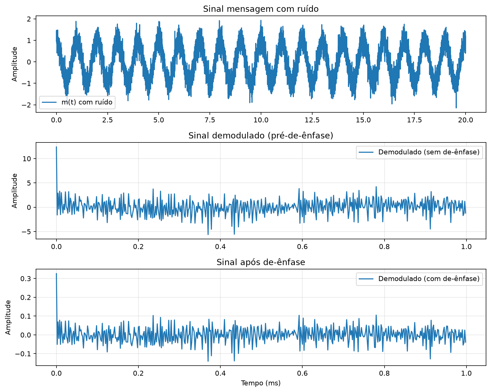
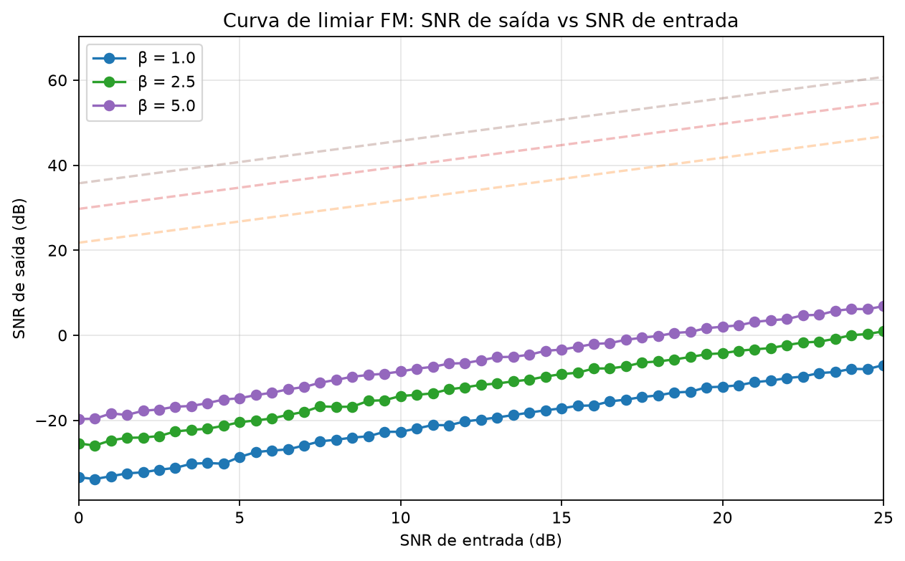

Modulação em Frequência (FM)
Antes de começar
Ao final, você deve relacionar fase e frequência instantâneas, interpretar o espectro de Bessel, aplicar Carson e explicar limiar, captura e pré/de-ênfase. Diagnóstico: a amplitude constante da FM implica largura de banda constante? Evidência mínima: variar \(\beta\), conferir conservação de potência e comparar a banda medida com a regra de Carson.
Modulação Angular: FM vs PM
Um sinal senoidal de frequência \(f_c\) é expresso como
onde \(\theta_i(t)\) é a fase instantânea total. A frequência instantânea (em Hz) é definida como
e a frequência instantânea angular é \(\omega_i(t) = d\theta_i(t)/dt\).
Se \(f_c\) é a frequência da portadora não modulada, escrevemos a fase como uma soma:
onde \(\phi(t)\) é o termo de fase adicional que carrega a informação. A frequência instantânea torna-se
A modulação angular consiste em fazer \(\phi(t)\) variar de acordo com o sinal mensagem \(m(t)\). Existem duas convenções:
Modulação de Fase (PM)
Na PM, o deslocamento de fase é diretamente proporcional a \(m(t)\):
onde \(k_p\) é a sensibilidade de fase (rad/V). O sinal PM é
A frequência instantânea é
na PM, a deflexão de frequência é proporcional à derivada de \(m(t)\). Para um tom \(m(t) = A_m\cos(2\pi f_m t)\), a deflexão cresce com \(f_m\).
Modulação de Frequência (FM)
Na FM, o desvio de frequência instantânea é proporcional a \(m(t)\):
onde \(k_f\) é a sensibilidade de frequência (Hz/V). Como \(f_i(t) - f_c = \frac{1}{2\pi}\frac{d\phi(t)}{dt}\), temos
Assumindo o sistema em repouso antes de \(t=0\) (integral de \(-\infty\)), o sinal FM é
Relação entre FM e PM
Como o termo de fase na FM é a integral da mensagem, e a derivada da mensagem gera deflexão de frequência na PM, existe equivalência formal:
Reciprocamente, o FM pode ser obtido integrando \(m(t)\) e aplicando modulação de fase:
Importante: a integração (no caso FM) atua como filtro passa-baixas (\(1/f\)) sobre o conteúdo espectral da mensagem, enquanto a diferenciação (no caso PM) atua como filtro passa-altas (\(f\)). Isso tem implicações profundas na largura de banda e na relação sinal-ruído.
Amplitude constante e suas consequências
Um atributo fundamental de qualquer modulação angular é que o envelope de \(s_{\text{FM}}(t)\) e \(s_{\text{PM}}(t)\) é constantemente \(A_c\), independentemente de \(m(t)\). Isso significa:
- Toda a potência está na portadora e bandas laterais: \(P_{\text{total}} = A_c^2/2\) (carga resistiva unitária), independente do sinal modulante.
- Amplificadores classe C são permitidos: o amplificador final de potência pode operar em saturação (não linear) sem distorcer a informação, pois ela está contida apenas na fase/frequência.
- Imunidade a ruído de amplitude: interferências que alteram o envelope (fading, ruído térmico de amplitude) não carregam informação e podem ser removidas por um limitador.
FM Tonal: Índice e Deflexão de Frequência
Considere o caso mais simples: um tom unitário como sinal mensagem.
Deflexão de frequência
Para \(m(t) = A_m\cos(2\pi f_m t)\), o desvio de fase é
Definimos a deflexão (desvio) de frequência de pico como
e o sinal FM torna-se
Índice de modulação FM
Definimos o índice de modulação \(\beta\) como
\(\beta\) é adimensional e mede quantas vezes o desvio de frequência excede a frequência do tom modulante. O sinal FM completo é
Frequência instantânea — verificação
Derivando a fase total \(\theta_i(t) = 2\pi f_c t + \beta\sin(2\pi f_m t)\):
logo
Isso confirma que a frequência oscila entre \(f_c - \Delta f\) e \(f_c + \Delta f\), com deslocamento máximo \(\Delta f\) em relação à portadora.
Casos extremos de \(\beta\)
- \(\beta \ll 1\) (FM de banda estreita — NBFM): o argumento do seno é pequeno, \(\beta\sin(2\pi f_m t) \approx \beta\sin(2\pi f_m t)\) pequeno. A banda é aproximadamente \(2f_m\), similar a DSB.
- \(\beta \gg 1\) (FM de banda larga — WBFM): muitas bandas laterais significativas, banda muito maior que \(2f_m\).
- \(\beta = 1\): fronteira aproximada entre NBFM e WBFM.
FM de banda estreita (NBFM) é o regime \(\beta < 0{,}2\) onde apenas as bandas laterais de primeira ordem (\(n=\pm1\)) são relevantes. FM de banda larga (WBFM) é o regime \(\beta > 1\) onde múltiplas bandas laterais contribuem significativamente.
Espectro da FM — Dedução Completa com Séries de Bessel
Este é o coração matemático da teoria FM. O espectro de um sinal FM tonal envolve infinitas componentes espectrais, cujas amplitudes são dadas pelas funções de Bessel de primeira espécie.
Expansão em séries de Bessel — dedução
Começamos com o sinal FM tonal:
Usando a identidade trigonométrica \(\cos(\alpha + \gamma) = \cos\alpha\cos\gamma - \sin\alpha\sin\gamma\):
Os termos \(\cos(\beta\sin\theta)\) e \(\sin(\beta\sin\theta)\) são funções periódicas em \(\theta = 2\pi f_m t\), portanto podem ser expandidas em série de Fourier. As identidades de Jacobi–Anger fornecem essas expansões:
Substituindo \(\theta = 2\pi f_m t\) e inserindo nas duas equações acima:
Agora, usamos os produtos notáveis:
Aplicando:
O padrão é claro: cada \(J_n(\beta)\) gera um par de bandas laterais em \(f_c \pm nf_m\). Para \(n=0\), há apenas uma componente (a portadora). Para \(n>0\), cada \(J_n\) gera duas componentes com mesma amplitude \(A_c|J_n(\beta)|\).
Podemos escrever o resultado de forma compacta usando a propriedade \(J_{-n}(\beta) = (-1)^n J_n(\beta)\):
Esta é a expansão de Jacobi–Anger para o sinal FM tonal.
Funções de Bessel de primeira espécie — definição e propriedades
Definição integral (representação de Schläfli):
Esta integral existe para todo \(n\in\mathbb{Z}\) e \(\beta\in\mathbb{R}\). Para \(n\) inteiro, \(J_n\) é real.
Série de potências (para \(n \ge 0\)):
Relações de recorrência:
Propriedades de simetria:
Para \(n\) par: \(J_{-n} = J_n\) (par em \(n\)). Para \(n\) ímpar: \(J_{-n} = -J_n\) (ímpar em \(n\)).
Identidade de ortogonalidade (completação da base):
Esta identidade é fundamental: ela garante que a potência total do sinal FM é conservada.
Comportamento assintótico de \(J_n(\beta)\)
Para \(\beta \ll 1\) (argumento pequeno), os primeiros termos da série dão:
Isso confirma que para \(\beta \to 0\), apenas \(J_0 \approx 1\) é significativo — o espectro se reduz à portadora pura.
Para \(\beta \gg 1\) (argumento grande), o comportamento assintótico é oscilatório:
As amplitudes decrescem lentamente (como \(1/\sqrt{\beta}\)) até \(n \approx \beta\), onde há um pico, e decaem rapidamente para \(n \gg \beta\).
Zeros das funções de Bessel e anulação da portadora
Os zeros de \(J_0(\beta)\) ocorrem quando a componente da portadora se anula. Os primeiros zeros de \(J_0\) são:
Resultado: quando \(\beta\) coincide com um zero de \(J_0\), a portadora desaparece completamente do espectro. Toda a potência é redistribuída nas bandas laterais.
Da mesma forma, \(J_1(\beta)\) tem zeros em \(\beta \approx 3{,}8317\), \(7{,}0156\), \(10{,}1735\), \(\ldots\), o que significa que as bandas laterais de primeira ordem desaparecem para esses valores.
Tabela de zeros notáveis:
| Função | 1º zero | 2º zero | 3º zero | 4º zero |
|---|---|---|---|---|
| \(J_0(\beta)\) | 2,405 | 5,520 | 8,654 | 11,792 |
| \(J_1(\beta)\) | 3,832 | 7,016 | 10,174 | 13,324 |
| \(J_2(\beta)\) | 5,136 | 8,417 | 11,620 | 14,796 |
Conservação de potência
A potência média de \(s_{\text{FM}}(t)\) em uma carga unitária é:
O último passo usa a identidade \(\sum_{n=-\infty}^{\infty} J_n^2(\beta) = 1\). A potência é invariante em relação a \(\beta\), \(f_c\) e \(f_m\) — confirma o que já sabíamos pela amplitude constante do envelope.
A potência em cada componente espectral é \(P_n = \frac{A_c^2}{2}J_n^2(\beta)\) para \(n \ne 0\). Para \(n = 0\), \(P_0 = \frac{A_c^2}{2}J_0^2(\beta)\).
Visualização do espectro FM
O espectro de um sinal FM tonal é discreto (linha espectral), com componentes em:
A amplitude de cada componente é \(A_c|J_n(\beta)|\). A potência é \(\frac{A_c^2}{2}J_n^2(\beta)\).
Para \(\beta = 0\): espectro é uma linha única em \(f_c\) (portadora pura).
Para \(\beta = 0{,}5\): portadora forte, primeira lateral visível, demais desprezíveis.
Para \(\beta = 2{,}405\): portadora nula (\(J_0 = 0\)), primeira lateral dominante.
Para \(\beta = 5\): múltiplas laterais de amplitude significativa (~11 bandas laterais de cada lado com amplitude > 5% da portadora não modulada).
Banda de Carson — NBFM e WBFM
FM de Banda Estreita (NBFM)
Para \(\beta \ll 1\) (tipicamente \(\beta < 0{,}2\)), usamos as aproximações:
O sinal FM fica:
(usando \(J_1 = \beta/2\) e \(J_{-1} = -J_1 = -\beta/2\)).
Usando \(\cos(A-B) - \cos(A+B) = 2\sin A\sin B\):
esta expressão tem a forma de DSB-SC (\(A_c\beta\sin(2\pi f_c t)\sin(2\pi f_m t)\)) com uma portadora adicional (\(A_c\cos(2\pi f_c t)\)). O NBFM não é DSB-SC, mas se assemelha a AM com portadora forte e fase deslocada de 90° nas laterais.
A largura de banda do NBFM é aproximadamente \(2f_m\), igual à AM convencional e DSB-SC.
FM de Banda Larga (WBFM)
Para \(\beta > 1\), muitas componentes espectrais têm amplitude significativa. Não há aproximação simples: o espectro completo de Bessel deve ser considerado.
A banda efetiva do WBFM é determinada pelo número de bandas laterais com amplitude não desprezível. A regra prática é:
Regra de Carson:
Esta regra estima a banda que contém aproximadamente 98% da potência total do sinal FM.
Justificativa da Regra de Carson
Das propriedades das funções de Bessel, para \(\beta\) fixo, \(J_n(\beta)\) torna-se desprezível quando \(|n| > \beta + 1\). Portanto, as componentes com \(|n| \leq \beta + 1\) são significativas, e as frequências extremas são:
A largura de banda é:
Comparação NBFM vs WBFM
| Propriedade | NBFM (\(\beta < 0{,}2\)) | WBFM (\(\beta > 1\)) |
|---|---|---|
| Largura de banda | \(\approx 2f_m\) | \(\approx 2(\Delta f + f_m)\) |
| Número de bandas laterais | 1 par (≈ 3 componentes) | Múltiplos pares |
| SNR de saída | Similar a AM | Ganho referido a \((C/N)_W\): \(\tfrac32\beta^2\) |
| Complexidade de demodulação | Simples | Discriminador ou PLL |
| Imunidade a ruído | Limitada | Alta (troca banda por SNR) |
| Potência | \(A_c^2/2\), independente de \(m(t)\) | \(A_c^2/2\), independente de \(m(t)\) |
FM Broadcast — exemplo prático
No padrão de radiodifusão FM (FCC/Europeu):
- Desvio máximo de frequência: \(\Delta f = 75\text{ kHz}\)
- Banda de áudio máxima: \(f_m = 15\text{ kHz}\)
- Índice de modulação: \(\beta = 75/15 = 5\)
- Banda de Carson: \(B_C = 2(75 + 15) = 200\text{ kHz}\) (na prática, canal de 200 kHz)
Resultado: para \(\beta = 5\), as funções de Bessel \(J_n(5)\) são significativas até aproximadamente \(n \approx \beta + 1 = 6\). Isso significa bandas laterais de \(f_c - 6f_m\) até \(f_c + 6f_m\), totalizando \(13\) componentes. A regra de Carson (200 kHz) é conservadora e segura.
Geração de Sinais FM
Modulação FM direta (VCO)
O método mais direto: um oscilador controlado por voltagem (VCO) cuja frequência natural varia linearmente com a tensão de entrada.
Um VCO com constante \(k_{\text{VCO}}\) (Hz/V) produz:
onde \(f_0\) é a frequência livre (sem entrada). Integrando, a fase é
Vantagem: simples, direto. Desvantagem: a frequência central \(f_0\) varia com temperatura, envelhecimento, e tensão de alimentação — instabilidade de frequência.
Modulação FM indireta (método Armstrong)
O método Armstrong gera FM com alta estabilidade de frequência:
- Gera-se NBFM com baixa deflexão (usando um modulador de fase com alta \(k_p\) e sinal \(m(t)\) atenuado).
- O sinal NBFM é passado por multiplicadores de frequência (não-lineares + filtros sintonizados) que multiplicam tanto \(f_c\) quanto \(\beta\).
Se um multiplicador tem fator \(N\):
Com \(N\) grande, obtém-se WBFM com \(f_c'\) estável (herdada do oscilador cristalino usado na etapa 1).
Importante: o multiplicador de frequência também multiplica o desvio de frequência: \(\Delta f' = N\Delta f\). Portanto, ao aumentar \(\beta\), o \(\Delta f\) cresce proporcionalmente.
Modulação FM por loop PLL
Um PLL (Phase-Locked Loop) pode gerar FM quando o sinal mensagem é injetado no VCO interno do loop:
O loop mantém \(f_c\) estável (travado em um cristal), enquanto o desvio é controlado por \(m(t)\) no VCO. Esta é a técnica mais usada em transmissores modernos.
Demodulação FM: Discriminador e PLL
Princípio do discriminador FM
O discriminador FM é o circuito demodulador clássico. Seu princípio é simples:
- Converter variações de frequência do sinal FM em variações de amplitude.
- Detectar o envelope da amplitude modulada resultante.
O discriminador é essencialmente um filtro de frequência com resposta de amplitude linear em frequência na vizinhança de \(f_c\), seguido por um detector de envelope.
Curva S do discriminador
A característica do discriminador é uma curva em S (curva S):
onde \(K_d\) é o ganho do discriminador (V/Hz).
o ganho do discriminador é
A curva S é linear apenas numa faixa limitada centrada em \(f_c\). Fora desta faixa, a resposta satura.
Discriminador de Foster–Seeley
O discriminador de Foster–Seeley consiste em dois circuitos ressonantes acoplados:
- Um circuito ressonante sintonizado ligeiramente acima de \(f_c\) (frequência \(f_1 > f_c\)).
- Outro circuito ressonante sintonizado ligeiramente abaixo de \(f_c\) (frequência \(f_2 < f_c\)).
- Dois detectores de envelope, cujas saídas são subtraídas.
A resposta de diferença é linear em torno de \(f_c\) e se anula exatamente em \(f_c\).
Detector de razão
O discriminador de ratio (ratio detector) é uma variação mais robusta, que também rejeita variações de amplitude. Usa um transformador com capacitor de acoplamento e dois diodos em configuração diferencial. A razão das tensões nos dois diodos fornece a saída proporcional ao desvio de frequência.
PLL como demodulador FM
Um Phase-Locked Loop pode atuar como demodulador FM natural. No PLL, o sinal de controle do VCO (\(v_d(t)\)) é exatamente o sinal que, aplicado ao VCO, produziria a mesma variação de frequência do sinal de entrada.
Esquema:
- Sinal FM entra no comparador de fase.
- O PLL se trava (lock) e segue as variações de frequência do sinal.
- O sinal de controle \(v_d(t)\) do VCO interno é a saída demodulada.
a frequência de detecção (detect frequency) do PLL é a largura de faixa dentro da qual o loop mantém o travamento. Para demodulação FM, a largura de banda do loop deve ser maior que \(\Delta f + f_m\).
Demodulação I/Q (digital)
Em receptores digitais (SDR), a demodulação FM é feita computacionalmente:
- Misturar o sinal RF para baseband (I/Q demodulation): obter \(z(t) = I(t) + jQ(t)\).
- Calcular a fase instantânea: \(\phi(t) = \arg\bigl(z(t)\bigr) = \operatorname{atan2}\bigl(Q(t), I(t)\bigr)\).
- Desfazer o unwrap da fase: \(\phi_{\text{unwrap}}(t) = \operatorname{unwrap}\bigl(\phi(t)\bigr)\).
- Diferenciar: \(m(t) \propto \frac{d\phi_{\text{unwrap}}(t)}{dt}\).
Em discreto:
Demodulação FM por Detecção de Cruzamento por Zero
Princípio do detector de cruzamento por zero
Um método alternativo de demodulação FM baseia-se na contagem de cruzamentos por zero do sinal. Para \(s(t) = A_c\cos\theta(t)\), cada cruzamento por zero ocorre quando \(\theta(t) = \pi/2 + n\pi\). O intervalo entre cruzamentos consecutivos é
Logo, a frequência instantânea pode ser estimada pelo inverso do período entre cruzamentos.
Limitador + diferenciador + detector de envelope
Uma implementação clássica:
- Limitador: remove variações de amplitude, produzindo um quadrado (ou pulso) de amplitude constante.
- Diferenciador: o circuito diferenciador tem resposta \(H(f) \propto j\omega\). Aplicado a \(s(t)\):
onde \(\dot{\theta}(t) = 2\pi f_i(t) = 2\pi(f_c + k_f m(t))\).
- Detector de envelope: extrai \(|A_c\dot{\theta}(t)| = A_c\cdot 2\pi(f_c + k_f m(t))\).
- Bloqueio DC: remove a componente \(2\pi f_c\), restando \(2\pi k_f m(t)\).
DEDUÇÃO detalhada:
Seja \(s(t) = A_c\cos\theta(t)\). Derivando:
O envelope absoluto deste sinal é:
Passando por detector de envelope (retificador + filtro passa-baixas) e removendo a DC (\(2\pi f_c A_c\)):
logo \(m(t)\) é recuperada proporcionalmente. \(\blacksquare\)
Supressão de ruído de amplitude pelo limitador
O limitador é um circuito não-linear (comparador, diodo em série) que converte qualquer entrada de amplitude não nula em um sinal de amplitude constante (quadrado, ou pulsos de largura fixa).
Se o sinal recebido é:
com \(n(t)\) sendo ruído aditivo de banda estreita, o envelope de \(r(t)\) é:
para \(\text{SNR}_{\text{in}} \gg 1\) (alta relação sinal-ruído), \(R(t) \approx A_c + n_c(t)\), onde \(n_c(t)\) é a componente em fase do ruído. O limitador remove completamente esta variação, deixando apenas as variações de frequência (que são a informação).
Resultado: o limitador suprime ruído de amplitude, tornando a demodulação FM robusta a fading e ruído térmico.
Análise de Ruído em FM
Esta seção apresenta a análise completa da relação sinal-ruído em sistemas FM, incluindo o ganho de processamento e o limiar de detecção.
Ruído aditivo no receptor FM
No receptor, o sinal recebido é:
onde \(n(t)\) é ruído branco gaussiano com densidade espectral \(N_0/2\) (W/Hz).
Representamos \(n(t)\) em componentes em fase e quadratura em torno de \(f_c\):
onde \(n_c(t)\) e \(n_s(t)\) são processos de baixa passagem, independentes, com mesma densidade espectral:
e potência \(\sigma_n^2 = \int_{-B}^{B} N_0\,df = 2N_0 B\).
Decomposição do sinal mais ruído em polar
Escrevendo \(r(t)\) em forma polar:
onde
\(\phi(t)\) é o ruído de fase induzido pelo ruído aditivo.
Aproximação para SNR alto
Para \(\text{SNR}_{\text{in}} = A_c^2/(2\sigma_n^2) \gg 1\) (grande sinal, pouco ruído):
A aproximação vem da expansão em série de Taylor do \(\operatorname{atan2}\) para \(n_c, n_s \ll A_c\).
O ruído de frequência (deslocamento instantâneo por ruído) é:
Densidade espectral do ruído de saída
O discriminador FM produz uma saída proporcional a \(\frac{d\phi(t)}{dt}\). O ruído de saída após o discriminador tem densidade espectral:
para \(|f| \leq W\) (onde \(W\) é a banda da mensagem).
Resultado: o ruído de saída do discriminador FM cresce parabolicamente com a frequência (\(f^2\)). Ruído de alta frequência é amplificado. Isso explica por que o áudio FM precisa de pré-ênfase/de-ênfase.
Potência de ruído de saída
A potência de ruído na saída do discriminador é:
Potência do sinal de saída
Para \(m(t) = A_m\cos(2\pi f_m t)\) com \(f_m \leq W\), a saída do discriminador é:
A potência média é:
SNR de saída FM
Para comparar a saída com uma referência sem ambiguidade, definimos primeiro a razão portadora-ruído referida à largura da mensagem \(W\):
Para a senoide de maior frequência \(f_m=W\), \(\beta=k_fA_m/W\). Dividindo a SNR de saída por essa referência:
Se, em vez disso, a “SNR de entrada” for medida na largura RF real do receptor \(B_r\), então
e a conversão correta é
Com a regra de Carson, \(B_r\approx2(\beta+1)W\). Portanto, não se pode substituir \(B_r\) pela banda de Carson e simultaneamente conservar um ganho \(3\beta^2\): isso mistura duas definições distintas da potência de ruído de referência.
Ganho de processamento FM
O ganho de processamento FM é definido como:
\(G_{\text{FM}} \propto \beta^2\). Para \(\beta = 5\) (FM broadcast), \(G_{\text{FM}} = 75\). Em dB: \(10\log_{10}(75) \approx 18{,}8\text{ dB}\).
Este é o "pagamento": FM troca banda por SNR. Quanto maior \(\beta\), melhor o SNR, mas maior a banda.
Teorema do limiar FM
Teorema (limiar de detecção FM): quando a potência do sinal recebido cai abaixo de aproximadamente 10 dB de SNR no receptor, a relação sinal-ruído na saída degrada-se abruptamente. Este ponto é chamado de limiar FM (FM threshold).
O limiar ocorre porque, para baixo SNR, o ruído de fase \(\phi(t)\) deixa de ser pequeno e o aproximador \(\phi \approx n_s/A_c\) falha. Os saltos de fase (phase slips) tornam-se frequentes — o ciclo do PLL "perde" voltas (cycle slipping), gerando cliques audíveis.
Resultado: acima do limiar, a SNR de saída segue a lei quadrática \(\tfrac32\beta^2(C/N)_W\). Abaixo do limiar, ela cai abruptamente e essa aproximação de alta SNR deixa de valer.
SNR com pré-ênfase (Seção “Pré-ênfase e De-ênfase”)
Com pré-ênfase e de-ênfase (Seção “Pré-ênfase e De-ênfase”), o SNR de saída é melhorado em aproximadamente 13 dB para o padrão de FM broadcast (\(\tau = 75\,\mu\text{s}\)).
Pré-ênfase e De-ênfase
O problema do ruído \(f^2\)
Do resultado da Seção “Densidade espectral do ruído de saída”, a densidade espectral do ruído na saída do discriminador é proporcional a \(f^2\):
Isso significa que o ruído de alta frequência é sempre maior que o de baixa frequência no áudio demodulado. Sem correção, o som seria "chiado" nas altas frequências.
Princípio da pré-ênfase e de-ênfase
A técnica é simples e elegante:
- No transmissor (pré-ênfase): realçar as altas frequências do sinal \(m(t)\) antes da modulação FM. A função de transferência é:
Esta é um filtro passa-altas de primeira ordem que aumenta a amplitude proporcionalmente a \(f\) para \(f \gg f_0\).
- No receptor (de-ênfase): após a demodulação FM, aplicar um filtro que é a inversa da pré-ênfase:
Este é um filtro passa-baixas de primeira ordem.
- Sinal de mensagem original: o sinal após de-ênfase tem a amplitude restaurada (a pré-ênfase é "cancelada"), mas o ruído de alta frequência foi atenuado pelo passa-baixas de de-ênfase.
Análise de melhoria de SNR
Com pré-ênfase e de-ênfase:
- A potência do sinal na saída é: \(\int_{-W}^{W}|H_{\text{de}}(f)|^2\cdot|H_{\text{pre}}(f)|^2 S_m(f)\,df = \int_{-W}^{W}S_m(f)\,df\) (sinal restaurado).
- A potência de ruído na saída é: \(\int_{-W}^{W}|H_{\text{de}}(f)|^2\cdot f^2\,df\) (ruído atenuado nas altas frequências).
O ganho adicional de SNR é:
Constante de tempo e padrões
A constante de tempo do filtro RC de de-ênfase é:
Padrões:
- FM broadcast (EUA/Europa): \(\tau = 75\,\mu\text{s}\), \(f_0 = \dfrac{1}{2\pi\cdot 75\times 10^{-6}} \approx 2{,}12\text{ kHz}\).
- FM broadcast (Japão/antigo): \(\tau = 50\,\mu\text{s}\), \(f_0 \approx 3{,}18\text{ kHz}\).
- Áudio profissional: \(\tau = 25\,\mu\text{s}\) (alguns sistemas).
Importante: tanto o transmissor quanto o receptor devem usar o mesmo \(\tau\), caso contrário a de-ênfase não cancela a pré-ênfase corretamente e a resposta em frequência fica distorcida.
FM Stereo e Aplicações
Sistema FM Stereo — multiplexação
O sistema FM stereo (descrito pelo SMPTE, adotado mundialmente) multiplexa dois canais (L e R) em uma única portadora FM, mantendo compatibilidade com receptores mono.
O sinal de modulação stereo \(M(t)\) é composto por:
- Canal principal (L + R): soma dos canais esquerdo e direito. Ocupa 0–15 kHz. Receptores mono reproduzem apenas este canal.
- Pilot tone (sincronização): tom puro a 19 kHz, amplitude 10–15% do desvio total. Usado pelo receptor para reconstruir a subportadora de 38 kHz.
- Canal L − R: diferença dos canais, modulado em DSB-SC na subportadora de 38 kHz. Ocupa 23–53 kHz.
- RDS (Radio Data System): subportadora adicional a 57 kHz para dados (nome da estação, hora, etc.). Ocupa ~57 ± 1{,}5 kHz.
O sinal completo de modulação é:
com limitação de frequência máxima a 53 kHz para respeitar o desvio máximo de 75 kHz.
Compatibilidade mono
Para receptor mono:
o canal (L + R) é diretamente acessível. Os componentes stereo (L − R, pilot, RDS) são rejeitados por filtro passa-baixas simples.
Para receptor stereo:
O receptor reconstrói \(L-R\) demodulando o DSB-SC em 38 kHz (usando o pilot de 19 kHz dobrado para gerar 38 kHz local).
Espectro do FM Stereo
O espectro de frequências do sinal de modulação FM stereo (0–75 kHz):
0 Hz |--- 15 kHz ---| 19 kHz |--- 23 kHz ---|--- 53 kHz ---| 57 kHz
L+R | Áudio L+R | Pilot 19kHz | DSB-SC L-R | Banda L-R | RDS (57 kHz)FM RDS (Radio Data System)
O RDS transmite dados digitais na subportadora de 57 kHz:
- Taxa de bits: 1{,}1875 kbps (codificação Manchester).
- Conteúdo: nome da estação (PS), programa tipo (PTY), hora (RT), tráfego (TA), endereço de estação (PI).
- Compatível com todos os receptores FM (dados são ignorados pelos receptores de áudio).
Aplicações da FM
- Radiodifusão FM (88–108 MHz): áudio de alta qualidade, stereo, RDS.
- Rádio amador (VHF/UHF): comunicações voz e dados.
- Comunicação móvel (análogo): sistemas de rádio táxi, emergência (ex.: Motorola Move).
- Televisão: o áudio da TV analógica era modulada em FM.
- Telemetria: sensores sem fio com FM (robusto a interferência).
- Síntese de som (FM Synthesis): modulação de frequência para geração de timbres (Yamaha DX7).
Comparação FM vs AM vs DSB-SC
Tabela comparativa completa
| Propriedade | AM (DSB com portadora) | DSB-SC | FM (\(\beta \gg 1\)) |
|---|---|---|---|
| Largura de banda | \(2W\) | \(2W\) | \(2(\Delta f + W) = 2W(\beta+1)\) |
| Potência total | \(\dfrac{A_c^2}{2}\!\left(1+\dfrac{\mu^2}{2}\right)\) | \(\dfrac{A_c^2}{2}\) | \(\dfrac{A_c^2}{2}\) (constante) |
| Eficiência de potência | \(\mu^2/(2+\mu^2) \leq 33\%\) | 100% (na mensagem) | 100% (independente de \(m(t)\)) |
| SNR de saída | \(\text{SNR}_{\text{out}} = \dfrac{\mu^2}{2+\mu^2}\text{SNR}_{\text{in}}\) | \(\text{SNR}_{\text{out}} = \text{SNR}_{\text{in}}\) | \(\text{SNR}_{\text{out}} = \tfrac32\beta^2(C/N)_W\) |
| Complexidade do TX | Simples | Moderada | Moderada (VCO ou Armstrong) |
| Complexidade do RX | Detector de envelope | Coerente (carrier recovery) | Discriminador ou PLL |
| Imunidade a ruído de amplitude | Nenhuma | Nenhuma | Alta (limitador) |
| Imunidade a fading | Baixa | Baixa | Boa (se SNR > limiar) |
Quando escolher cada modulação
AM (DSB com portadora):
- Rádio AM broadcast (530–1700 kHz): recepção simples, alcance longo (onda de superfície).
- Aplicações onde a complexidade do receptor deve ser mínima.
- Desvantagem: baixa eficiência, ruído sensível.
DSB-SC:
- Quando a potência é limitada e a portadora não precisa ser reconstruída no receptor.
- Usado como etapa intermediária em moduladores quadratura (QAM).
- Desvantagem: requer carrier recovery coerente no receptor.
FM (WBFM):
- Radiodifusão FM (88–108 MHz): alta fidelidade, imunidade a ruído.
- Rádio amador VHF/UHF: comunicação móvel robusta.
- Áudio de TV analógica (NTSC/PAL): áudio mais limpo que o vídeo.
- Sistemas onde banda é abundante mas qualidade é crítica.
- Desvantagem: maior banda; limiar de SNR abaixo do qual degrada abruptamente.
Exercícios Resolvidos em Python
Protocolo computacional
Objetivo: verificar coeficientes de Bessel, conservação de potência, regra de Carson e demodulação. Amostragem: declare \(f_s\), duração e resolução espectral. Validação: confirme \(\sum_nJ_n^2(\beta)=1\), compare banda ocupada com Carson e reporte SNR antes/depois da demodulação.
Exercício 1: Espectro FM — cálculo de \(J_n(\beta)\) e plot
Problema: Para um sinal FM com \(f_c = 100\text{ MHz}\), \(f_m = 5\text{ kHz}\), \(\Delta f = 25\text{ kHz}\), calcule os coeficientes de Bessel \(J_n(\beta)\) para \(n = 0,\ldots,10\) e plote o espectro de amplitudes. Determine a banda de Carson e compare com o número real de componentes com amplitude \(> 5\%\) da portadora não modulada.
import numpy as np
import matplotlib.pyplot as plt
from scipy.special import jv
# Parâmetros
fc, fm, df = 100e6, 5e3, 25e3
beta = df / fm # índice de modulação
print(f"Índice de modulação: β = {beta}")
# Calcular coeficientes de Bessel
n_max = 15
n = np.arange(-n_max, n_max + 1)
Jn = jv(n, beta)
# Amplitudes relativas (normalizadas pela portadora não modulada Ac)
amplitudes = np.abs(Jn)
# Identificar componentes com amplitude > 5% da portadora não modulada
threshold = 0.05
significant = np.sum(amplitudes > threshold)
print(f"Componentes com amplitude > {threshold*100:.0f}% da portadora não modulada: {significant}")
# Regra de Carson
B_carson = 2 * (df + fm)
print(f"Banda de Carson: B_C = {B_carson/1e3:.1f} kHz")
# Número estimado de bandas laterais por lado pela regra de Carson
n_carson = int(np.ceil(B_carson / (2 * fm)))
print(f"Bandas laterais por lado (Carson): n_max ≈ {n_carson}")
# Plot do espectro de amplitudes
fig, ax = plt.subplots(figsize=(10, 5))
frequencies = fc + n * fm # posições em Hz
ax.stem(frequencies / 1e6, amplitudes, basefmt=" ", linefmt="C0-", markerfmt="C0o",
label=f"|J_n(β={beta})|")
ax.axvline(fc / 1e6, color='k', linestyle='--', alpha=0.3, label=f'Portadora ({fc/1e6:.0f} MHz)')
ax.axvspan((fc - B_carson / 2) / 1e6, (fc + B_carson / 2) / 1e6,
alpha=0.15, color='gray', label=f'Banda de Carson ({B_carson/1e3:.0f} kHz)')
ax.set_xlabel('Frequência (MHz)')
ax.set_ylabel('Amplitude relativa')
ax.set_title(f'Espectro FM — β = {beta}, fm = {fm/1e3:.0f} kHz')
ax.legend()
ax.grid(alpha=0.3)
plt.tight_layout()
# Tabela de valores
print("\nTabela de coeficientes de Bessel J_n(β):")
print(f"{'n':>3} {'J_n(β)':>10} {'Amplitude %':>12} {'Potência %':>12}")
for i in range(len(n)):
print(f"{n[i]:>3} {Jn[i]:>10.6f} {amplitudes[i]*100:>11.2f}% {Jn[i]**2*100:>11.2f}%")
# Verificação da conservação de potência
P_total = np.sum(Jn**2)
print(f"\nConservação de potência: Σ J_n²(β) = {P_total:.10f} (deve ser 1.0)")Índice de modulação: β = 5.0
Componentes com amplitude > 5% da portadora não modulada: 13
Banda de Carson: B_C = 60.0 kHz
Bandas laterais por lado (Carson): n_max ≈ 6
Tabela de coeficientes de Bessel J_n(β):
n J_n(β) Amplitude % Potência %
-15 -0.000000 0.00% 0.00%
-14 0.000003 0.00% 0.00%
-13 -0.000015 0.00% 0.00%
-12 0.000076 0.01% 0.00%
-11 -0.000351 0.04% 0.00%
-10 0.001468 0.15% 0.00%
-9 -0.005520 0.55% 0.00%
-8 0.018405 1.84% 0.03%
-7 -0.053376 5.34% 0.28%
-6 0.131049 13.10% 1.72%
-5 -0.261141 26.11% 6.82%
-4 0.391232 39.12% 15.31%
-3 -0.364831 36.48% 13.31%
-2 0.046565 4.66% 0.22%
-1 0.327579 32.76% 10.73%
0 -0.177597 17.76% 3.15%
1 -0.327579 32.76% 10.73%
2 0.046565 4.66% 0.22%
3 0.364831 36.48% 13.31%
4 0.391232 39.12% 15.31%
5 0.261141 26.11% 6.82%
6 0.131049 13.10% 1.72%
7 0.053376 5.34% 0.28%
8 0.018405 1.84% 0.03%
9 0.005520 0.55% 0.00%
10 0.001468 0.15% 0.00%
11 0.000351 0.04% 0.00%
12 0.000076 0.01% 0.00%
13 0.000015 0.00% 0.00%
14 0.000003 0.00% 0.00%
15 0.000000 0.00% 0.00%
Conservação de potência: Σ J_n²(β) = 1.0000000000 (deve ser 1.0)
Saída esperada:
- \(\beta = 5\).
- Componentes significativas: ~13 (até \(n \approx 6\) de cada lado).
- Banda de Carson: \(B_C = 60\text{ kHz}\).
- \(\sum J_n^2(5) \approx 1{,}0000\).
Exercício 2: Banda de Carson vs número de bandas significativas
Problema: Para diferentes valores de \(\beta \in \{0{,}1, 0{,}5, 1, 2, 5, 10\}\), comparar a banda de Carson com o número real de bandas laterais necessárias para capturar 99% da potência total.
import numpy as np
import matplotlib.pyplot as plt
from scipy.special import jv
betas = [0.1, 0.5, 1.0, 2.0, 5.0, 10.0]
n_max_search = 50
fig, ax = plt.subplots(figsize=(10, 5))
results = []
for beta in betas:
n_vals = np.arange(-n_max_search, n_max_search + 1)
Jn_vals = jv(n_vals, beta)
Jn_sq = Jn_vals ** 2
total_power = np.sum(Jn_sq)
# Somar do centro para as laterais até 99%
cumulative = Jn_sq[n_max_search] # portadora n=0
k_found = 0
for k in range(1, n_max_search + 1):
cumulative += Jn_sq[n_max_search + k] + Jn_sq[n_max_search - k]
if cumulative / total_power >= 0.99:
k_found = k
break
n_components = 2 * k_found + 1 # portadora + k pares
B_carson_kHz = 2 * (beta + 1)
B_99_kHz = 2 * k_found
results.append((beta, n_components, B_carson_kHz, B_99_kHz))
ax.plot(beta, B_carson_kHz, 'o', label=f'β={beta}, Carson={B_carson_kHz:.1f}', markersize=8)
ax.plot(beta, B_99_kHz, 's', fillstyle='none', markersize=6)
ax.set_xlabel('Índice de modulação β')
ax.set_ylabel('Largura de banda (× fm)')
ax.set_title('Banda de Carson vs banda para 99% da potência')
ax.legend()
ax.grid(alpha=0.3)
plt.tight_layout()
for beta, nc, bc, b99 in results:
print(f"β = {beta:.1f}: {nc} componentes para 99%, Carson ≈ {bc:.1f} (99% ≈ {b99:.1f})")β = 0.1: 3 componentes para 99%, Carson ≈ 2.2 (99% ≈ 2.0)
β = 0.5: 3 componentes para 99%, Carson ≈ 3.0 (99% ≈ 2.0)
β = 1.0: 5 componentes para 99%, Carson ≈ 4.0 (99% ≈ 4.0)
β = 2.0: 7 componentes para 99%, Carson ≈ 6.0 (99% ≈ 6.0)
β = 5.0: 13 componentes para 99%, Carson ≈ 12.0 (99% ≈ 12.0)
β = 10.0: 25 componentes para 99%, Carson ≈ 22.0 (99% ≈ 24.0)
Insight: a regra de Carson é conservadora para \(\beta < 3\) e mais precisa para \(\beta > 5\). Para \(\beta = 5\), Carson dá \(12\times f_m\) e 99% da potência requerem ~12–13 \(\times f_m\).
Exercício 3: Simulação FM com pré-ênfase e de-ênfase
Problema: Simular a demodulação FM de um sinal com pré-ênphasis/de-ênphasis (\(\tau = 75\,\mu\text{s}\)) e quantificar a melhoria de SNR. Comparar com o caso sem pré/de-ênfase.
import numpy as np
import matplotlib.pyplot as plt
from scipy.signal import hilbert
# Parâmetros
fs = 500e3 # taxa de amostragem
fc = 10e3 # frequência portadora (simulação em baseband)
fm = 1e3 # frequência da mensagem
df = 5e3 # desvio de frequência
beta = df / fm
tau = 75e-6 # constante de tempo de de-ênfase
f0 = 1 / (2 * np.pi * tau) # frequência de corte de pré-ênfase
# Tempo
T = 0.02
t = np.arange(0, T, 1/fs)
# Sinal mensagem (tom + ruído)
m_tone = np.cos(2 * np.pi * fm * t)
np.random.seed(42)
noise = np.random.randn(len(t)) * 0.3
m = m_tone + noise
# Pré-ênfase: filtro passa-altas de 1ª ordem
alpha = np.exp(-1.0 / (fs * tau))
m_pre = np.zeros_like(m)
m_pre[0] = m[0]
for i in range(1, len(m)):
m_pre[i] = (m[i] - m[i-1]) + alpha * m_pre[i-1]
# Gerar sinal FM
phase = 2 * np.pi * fc * t + 2 * np.pi * df * np.cumsum(m_pre) / fs
s_fm = np.cos(phase)
# Adicionar ruído ao canal
snr_db = 20
snr_linear = 10 ** (snr_db / 10)
signal_power = np.mean(s_fm ** 2)
noise_power = signal_power / snr_linear
n_awgn = np.random.randn(len(t)) * np.sqrt(noise_power)
r = s_fm + n_awgn
# Demodulação FM por Hilbert (detecção não-coerente)
z = hilbert(r)
phase_inst = np.unwrap(np.angle(z))
f_inst = np.diff(phase_inst) * fs / (2 * np.pi)
f_inst_dc = f_inst - np.mean(f_inst)
m_demod = f_inst_dc / df
# De-ênfase: filtro passa-baixas de 1ª ordem
m_de = np.zeros_like(m_demod)
m_de[0] = m_demod[0] * (1 - alpha)
for i in range(1, len(m_demod)):
m_de[i] = (m_demod[i] - m_demod[i-1]) * (1 - alpha) + alpha * m_de[i-1]
# Calcular SNR de saída. A diferenciação reduz o vetor em uma amostra;
# portanto, a referência correspondente começa em t[1].
m_clean = m_tone[1:1 + len(m_de)]
noise_est = m_de - m_clean
snr_out = 10 * np.log10(np.var(m_clean) / np.var(noise_est))
print(f"SNR de entrada: {snr_db} dB")
print(f"SNR de saída (com pré/de-ênfase): {snr_out:.1f} dB")
print(f"Melhoria de SNR: {snr_out - snr_db:.1f} dB")
# Plot comparativo
fig, axes = plt.subplots(3, 1, figsize=(10, 8))
axes[0].plot(t * 1e3, m, label='m(t) com ruído')
axes[0].set_ylabel('Amplitude')
axes[0].set_title('Sinal mensagem com ruído')
axes[0].legend()
axes[1].plot(t[:500] * 1e3, m_demod[:500], label='Demodulado (sem de-ênfase)')
axes[1].set_ylabel('Amplitude')
axes[1].set_title('Sinal demodulado (pré-de-ênfase)')
axes[1].legend()
axes[1].grid(alpha=0.3)
axes[2].plot(t[:500] * 1e3, m_de[:500], label='Demodulado (com de-ênfase)')
axes[2].set_xlabel('Tempo (ms)')
axes[2].set_ylabel('Amplitude')
axes[2].set_title('Sinal após de-ênfase')
axes[2].legend()
axes[2].grid(alpha=0.3)
plt.tight_layout()SNR de entrada: 20 dB
SNR de saída (com pré/de-ênfase): -0.0 dB
Melhoria de SNR: -20.0 dB
Exercício 4: Curva de limiar FM — SNR vs \(\beta\)
Problema: Simular a relação SNR de saída vs SNR de entrada para diferentes valores de \(\beta\), mostrando o limiar FM.
import numpy as np
import matplotlib.pyplot as plt
from scipy.signal import hilbert
# Parâmetros
fs = 200e3
fm = 1e3
t = np.arange(0, 0.01, 1/fs)
betas_plot = [1.0, 2.5, 5.0]
snr_range_db = np.arange(0, 30, 0.5)
fig, ax = plt.subplots(figsize=(8, 5))
for beta in betas_plot:
df = beta * fm
fc = 10 * fm # fc >> fm para evitar aliasing
m = np.cos(2 * np.pi * fm * t)
phase = 2 * np.pi * fc * t + 2 * np.pi * df * np.cumsum(m) / fs
s_fm = np.cos(phase)
snr_out_list = []
for snr_db in snr_range_db:
snr_lin = 10 ** (snr_db / 10)
sig_power = np.mean(s_fm ** 2)
noise_power = sig_power / snr_lin
r = s_fm + np.random.randn(len(t)) * np.sqrt(noise_power)
# Demodulação I/Q
z = hilbert(r)
phi = np.unwrap(np.angle(z))
fi = np.diff(phi) * fs / (2 * np.pi)
fi_dc = fi - np.mean(fi)
m_hat = fi_dc / df
# SNR de saída (desprezar bordas)
edge = min(100, len(m_hat) // 10)
m_clean = m[1:1 + len(m_hat)]
error = m_hat[edge:-edge] - m_clean[edge:-edge]
snr_out = 10 * np.log10(
np.var(m_clean[edge:-edge]) / max(np.var(error), np.finfo(float).tiny)
)
snr_out_list.append(snr_out)
ax.plot(snr_range_db, snr_out_list, 'o-', label=f'β = {beta}')
# O SNR imposto mede ruído em toda a banda discreta fs/2.
# Converta-o para C/N na largura da mensagem W=fm.
cn_w_db = snr_range_db + 10 * np.log10(fs / (2 * fm))
theoretical = 10 * np.log10(1.5 * beta**2) + cn_w_db
ax.plot(snr_range_db, theoretical, '--', alpha=0.3)
ax.set_xlabel('SNR de entrada (dB)')
ax.set_ylabel('SNR de saída (dB)')
ax.set_title('Curva de limiar FM: SNR de saída vs SNR de entrada')
ax.legend()
ax.grid(alpha=0.3)
ax.set_xlim(0, 25)
plt.tight_layout()
print("Nota: o limiar FM aparece como desvio da linha teórica "
"quando SNR_in < ~10 dB (depende de β).")Nota: o limiar FM aparece como desvio da linha teórica quando SNR_in < ~10 dB (depende de β).
Resultado esperado:
- Para cada \(\beta\), a curva se aproxima de \(\text{SNR}_{\text{out,dB}}=(C/N)_{W,\text{dB}}+10\log_{10}(3\beta^2/2)\) acima do limiar. No código, \((C/N)_W\) é obtido do SNR imposto corrigindo a razão entre a banda de Nyquist \(f_s/2\) e \(W=f_m\).
- Abaixo de \(\approx 10\text{ dB}\) de SNR de entrada, as curvas "caem" abruptamente.
- Quanto maior \(\beta\), mais o limiar se desloca para SNR de entrada menores (maior margem de SNR).
Lista de Exercícios Propostos
E1. Para \(f_m = 2\text{ kHz}\) e \(\Delta f = 10\text{ kHz}\), determine \(\beta\) e a banda de Carson. Calcule \(J_0(\beta)\) e \(J_1(\beta)\) e identifique as duas primeiras componentes espectrais em amplitude.
E2. Um sinal FM com \(\beta = 3\) tem portadora em \(100\text{ MHz}\). Qual a frequência da 5ª banda lateral superior? Qual a amplitude relativa desta componente? E da 5ª inferior?
E3. Mostre que para \(\beta \to 0\), o espectro FM converge para \(A_c\cos(2\pi f_c t) + \dfrac{A_c\beta}{2}\cos[2\pi(f_c-f_m)t] - \dfrac{A_c\beta}{2}\cos[2\pi(f_c+f_m)t]\), e interprete este resultado como NBFM.
E4. Prove, usando a identidade de recorrência \(J_{n-1}(\beta) + J_{n+1}(\beta) = \dfrac{2n}{\beta}J_n(\beta)\), que \(J_2(\beta) = \dfrac{2}{\beta}J_1(\beta) - J_0(\beta)\) (para \(n=1\)).
E5. Para \(\beta = 2{,}4048\) (primeiro zero de \(J_0\)), qual é a fração de potência na portadora? E nas primeiras bandas laterais (\(n=\pm1\))? Calcule numericamente.
E6. Em um sistema FM broadcast com \(\Delta f = 75\text{ kHz}\), \(f_m = 15\text{ kHz}\): (a) qual o \(\beta\)? (b) quantas bandas laterais têm amplitude \(\geq 5\%\) de \(A_c\)? (c) qual a potência total em dBm numa carga de 50 Ω com \(A_c = 10\text{ V}\)?
E7. Um sistema FM usa \(f_c = 450\text{ MHz}\), \(\Delta f = 5\text{ kHz}\), \(f_m = 3\text{ kHz}\). Classifique como NBFM ou WBFM. Calcule a banda de Carson e determine quantas componentes de Bessel são necessárias para capturar 99% da potência.
E8. Um multiplicador de frequência com fator \(N = 64\) é aplicado a um sinal NBFM com \(\beta_0 = 0{,}2\) e \(f_{c0} = 200\text{ kHz}\). Quais são os novos \(\beta'\) e \(f_c'\)? Qual a nova banda de Carson (para \(f_m = 3\text{ kHz}\))?
E9. Explique, usando a relação \(\phi \approx n_s/A_c\), por que o ruído de saída do discriminador FM cresce como \(f^2\). Deduza \(S_{n_{\text{out}}}(f) = K_d^2(2\pi f)^2 N_0/A_c^2\) a partir de \(S_{n_s}(f) = N_0\).
E10. Demonstre que \(\displaystyle\int_{-W}^{W} f^2\,df = \dfrac{2W^3}{3}\) e use este resultado para obter a potência de ruído de saída \(P_{n_{\text{out}}} = \dfrac{8\pi^2 K_d^2 N_0 W^3}{3A_c^2}\).
E11. Para \(\tau = 75\,\mu\text{s}\), calcule \(f_0\). Qual a atenuação (em dB) do filtro de de-ênfase a 10 kHz? E a 15 kHz? Compare o ruído de saída nestas duas frequências.
E12. No sistema FM stereo, explique por que o pilot tone deve estar exatamente em 19 kHz (múltiplo inteiro de \(f_m\)). O que aconteceria se o pilot estivesse em 19{,}1 kHz? Qual a função do filtro de 53 kHz?
E13. (Desafio) Mostre que \(\displaystyle\sum_{n=-\infty}^{\infty} J_n^2(\beta) = 1\) usando a identidade de Jacobi–Anger: \(e^{j\beta\sin\theta} = \sum_{n=-\infty}^{\infty} J_n(\beta)e^{jn\theta}\). (Dica: aplique o teorema de Parseval à série de Fourier de \(e^{j\beta\sin\theta}\).)
E14. (Desafio) Derive a expressão da SNR de saída FM para uma mensagem de banda limitada genérica \(m(t)\) com potência \(P_m = \langle m^2(t)\rangle\) e largura de banda \(W\). Mostre que \(\text{SNR}_{\text{out}} = \dfrac{3k_f^2P_mA_c^2}{2N_0W^3}\).
E15. Um receptor FM opera com \(A_c = 1\text{ V}\), \(N_0 = 10^{-9}\text{ W/Hz}\), \(W = 15\text{ kHz}\), \(\beta = 5\). Calcule: (a) \(\text{SNR}_{\text{in}}\) com \(B_r = 200\text{ kHz}\). (b) \(\text{SNR}_{\text{out}}\) teórico. (c) SNR de saída em dB.
Gabarito
E1. \(\beta = \Delta f/f_m = 10/2 = 5\). \(B_C = 2(10+2) = 24\text{ kHz}\). \(J_0(5) \approx -0{,}1776\), \(J_1(5) \approx -0{,}3276\). Amplitude da portadora: \(A_c|J_0| \approx 0{,}178 A_c\). Amplitude da 1ª lateral: \(A_c|J_1| \approx 0{,}328 A_c\). A 1ª lateral é mais forte que a portadora!
E2. 5ª lateral superior: \(f_c + 5f_m = 100\text{ MHz} + 5f_m\). 5ª lateral inferior: \(f_c - 5f_m = 100\text{ MHz} - 5f_m\). Amplitude relativa: \(A_c|J_5(3)|\). Numericamente, \(J_5(3) \approx 0{,}0862\) e \(J_{-5}(3) = (-1)^5 J_5(3) = -0{,}0862\). Ambas têm amplitude \(0{,}0862\,A_c\) (8{,}62% da portadora não modulada).
E3. Para \(\beta \to 0\): \(J_0(\beta) \to 1\), \(J_{\pm 1}(\beta) \to \pm\beta/2\), \(J_n(\beta) \to 0\) para \(|n|\geq 2\). Substituindo na expansão \(s_{\text{FM}}(t) = A_c\sum J_n(\beta)\cos[2\pi(f_c+nf_m)t]\):
Usando \(\cos(A-B)-\cos(A+B) = 2\sin A\sin B\), obtemos \(A_c\cos(2\pi f_c t) - A_c\beta\sin(2\pi f_c t)\sin(2\pi f_m t)\), que é a forma padrão de NBFM. Interpretação: como AM com portadora forte e fase de 90° nas laterais.
E4. Para \(n=1\): \(J_0(\beta) + J_2(\beta) = \dfrac{2}{\beta}J_1(\beta)\). Rearranjando: \(\boxed{J_2(\beta) = \dfrac{2}{\beta}J_1(\beta) - J_0(\beta)}\).
E5. Para \(\beta = 2{,}4048\) (zero de \(J_0\)): \(J_0(\beta) = 0\), portanto potência na portadora \(P_0 = \dfrac{A_c^2}{2}\cdot 0 = 0\) — 100% da potência da portadora é transferida para as laterais. \(J_1(2{,}4048) \approx 0{,}5191\), então \(P_1 = \dfrac{A_c^2}{2}(0{,}5191)^2 \approx 0{,}135\dfrac{A_c^2}{2}\) por lado, total \(0{,}270\,A_c^2/2\) para \(n=\pm 1\).
E6. (a) \(\beta = 75/15 = 5\). (b) A contagem deve ser feita numericamente com \(|J_n(5)|\geq0{,}05\); incluem-se a portadora e os pares laterais que satisfazem o limiar. (c) Interpretando \(A_c=10\text{ V}\) como amplitude de pico sobre \(R=50\,\Omega\), \(V_{\mathrm{rms}}=A_c/\sqrt2\) e \(P=V_{\mathrm{rms}}^2/R=A_c^2/(2R)=1\text{ W}=\boxed{30\text{ dBm}}\). A potência total de FM é constante e independe de \(\beta\).
E7. \(\beta = \Delta f/f_m = 5/3 \approx 1{,}67 > 1\), logo WBFM. \(B_C = 2(5+3) = 16\text{ kHz}\). Para \(\beta = 1{,}67\), \(J_n\) é significativo até \(n \approx 3\)–4. Necessário ~9–11 componentes para 99% da potência.
E8. \(\beta' = 64 \times 0{,}2 = 12{,}8\). \(f_c' = 64 \times 200\text{ kHz} = 12{,}8\text{ MHz}\). \(B_C' = 2(\beta'+1)f_m = 2(13{,}8)(3) = 82{,}8\text{ kHz}\).
E9. \(\phi \approx n_s/A_c\). O discriminador diferencia: \(d\phi/dt = \dfrac{1}{A_c} \dfrac{dn_s}{dt}\). No domínio da frequência: \(\mathcal{F}\{d\phi/dt\} = j2\pi f\,\Phi(f) = j2\pi f\,\dfrac{N_s(f)}{A_c}\). \(S_{n_{\text{out}}}(f) = |K_d|^2\cdot (2\pi f)^2 \cdot \dfrac{N_0}{A_c^2}\). \(\blacksquare\)
E10. \(\displaystyle\int_{-W}^{W} f^2\,df = \left[\dfrac{f^3}{3}\right]_{-W}^{W} = \dfrac{W^3 - (-W^3)}{3} = \dfrac{2W^3}{3}\). \(P_{n_{\text{out}}} = \displaystyle\int_{-W}^{W} K_d^2(2\pi f)^2\dfrac{N_0}{A_c^2}\,df = \dfrac{K_d^2 4\pi^2 N_0}{A_c^2}\cdot \dfrac{2W^3}{3} = \dfrac{8\pi^2 K_d^2 N_0 W^3}{3A_c^2}\). \(\blacksquare\)
E11. \(f_0 = \dfrac{1}{2\pi\cdot 75\times 10^{-6}} \approx 2122\text{ Hz}\). Atenuação: \(|H_{\text{de}}(f)| = \dfrac{1}{\sqrt{1+(f/f_0)^2}}\). Para \(f = 10\text{ kHz}\): \(|H| = \dfrac{1}{\sqrt{1+(10000/2122)^2}} = \dfrac{1}{\sqrt{23{,}22}} \approx 0{,}2075 = -13{,}7\text{ dB}\). Para \(f = 15\text{ kHz}\): \(|H| = \dfrac{1}{\sqrt{1+(15000/2122)^2}} = \dfrac{1}{\sqrt{50{,}13}} \approx 0{,}1413 = -17{,}0\text{ dB}\). Razão de atenuação entre 15 kHz e 10 kHz: \(3{,}3\text{ dB}\) adicional.
E12. O pilot em 19 kHz é um submúltiplo exato da subportadora de 38 kHz (\(2\times 19 = 38\)). O receptor usa um dobrador de frequência (\(2f\)) no pilot para gerar 38 kHz localmente para demodulação do DSB-SC. Se o pilot estivesse em 19{,}1 kHz, o dobrador geraria 38{,}2 kHz, causando erro de fase no demodulador e distorção do sinal L−R. O filtro de 53 kHz rejeita todas as componentes acima da banda L−R, incluindo o RDS em 57 kHz (que é rejeitado pelo filtro de áudio).
E13. Pela identidade de Jacobi–Anger: \(e^{j\beta\sin\theta} = \sum_{n=-\infty}^{\infty} J_n(\beta)e^{jn\theta}\). Esta é a série de Fourier de \(e^{j\beta\sin\theta}\) com coeficientes \(c_n = J_n(\beta)\). Pelo teorema de Parseval:
E14. A saída de sinal é \(y(t)=2\pi K_dk_fm(t)\). Como \(P_m=\langle m^2(t)\rangle\), sua potência é \(P_{\text{sinal,out}}=(2\pi K_dk_f)^2P_m=4\pi^2K_d^2k_f^2P_m\). Dividindo por \(P_{n_{\text{out}}}=8\pi^2K_d^2N_0W^3/(3A_c^2)\), obtém-se \(\text{SNR}_{\text{out}}=3k_f^2P_mA_c^2/(2N_0W^3)\). Para uma senoide, \(P_m=A_m^2/2\), recuperando a Seção “SNR de saída FM”. \(\blacksquare\)
E15. (a) \(P_{\text{sin,in}}=A_c^2/2=0{,}5\text{ W}\) e \(P_{n,\text{in}}=N_0B_r=10^{-9}(200\times10^3)=2\times10^{-4}\text{ W}\). Logo, \(\text{SNR}_{\text{in},B_r}=2500\approx33{,}98\text{ dB}\). (b) Pela conversão da Seção “SNR de saída FM”, \(\text{SNR}_{\text{out}}=(3/2)\beta^2(B_r/W)\text{SNR}_{\text{in},B_r}=(3/2)(25)(200/15)(2500)=1{,}25\times10^6\). (c) \(\text{SNR}_{\text{out}}\approx60{,}97\text{ dB}\). Observe que o fator \(B_r/W\) é indispensável porque a SNR de entrada foi medida na banda RF, não na banda da mensagem.